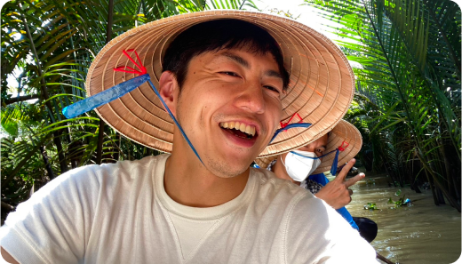

<!DOCTYPE html>
<html lang="en">
  <head>
    <meta charset="UTF-8" />
    <meta name="viewport" content="width=device-width, initial-scale=1.0" />
    <link rel="stylesheet" href="../css/index.css" />
    <link rel="stylesheet" href="../css/About.css" />
    <script src="https://ajax.googleapis.com/ajax/libs/jquery/3.7.1/jquery.min.js"></script>
    <title>TORCH_About</title>
  </head>
  <body>
    <div id="app" class="AboutPage">

    <section id="About">
<!-- 
      <div class="aboutFlexContainer">
        <div class="aboutFlex">
          <div class="text">
            <h2>Akiちゃん</h2>
            <p>こんにちは、あきちゃんです
              私は九州の城下町、熊本で魚屋の両親の元に次男（？）、長女（？）として生まれました。
              ま、幼少期から男の子が好きだった訳なんですね。
              小さい時から、植物と飛行機と英語が好きで、好きが嵩じて、園芸店で働いたり、CAになったり、英会話コーチをやって来ました。
              プライベートでは妊活中でして、女性カップルに精子提供をすることで新しい形の家族を作ろうと奮闘しています。
              そんなカラフルでモザイクな感じの私がみなさんに提供しているのが
              「呪いから解放」するセッションです。
              興味がある人はまず連絡してみてくださいね！</p>
          </div>
          <div class="pic">
            
          </div>
        </div>
        <div class="aboutFlex odd">
          <div class="text">
            <h2>CAライフ</h2>
            <p>中でも最もexcitingだったのはCAライフ（実際はキャビンクルーと呼びます）ですね。タイの航空会社とドバイの航空会社に居ましたが、日々、世界１４０都市をまたにかける生活でした。
              海外はドバイ、バンコク、シドニー、ロンドン、パリと住んできまして、フランス語やタイ語を含む４か国語を話します。今はアラビア語の習得に向けて励んでいます。</p>
          </div>
          <div class="pic">
            
          </div>
        </div>
      </div>

 
            <div class="aboutYoutubeContainer">
        <div class="youtubeTitle"><h2>Youtube チャンネル</h2></div>
        <div class="youtubeArea">
          
          
        </div>
        <div class="youtubeLink">
          <button class="youtubeBtn">Youtube チャンネルはこちら</button>
        </div>
      </div>
    </section> 
-->

  </div>

    <script type="module" src="../js/script.js"></script>
  </body>
</html>

